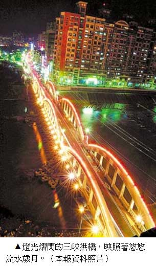
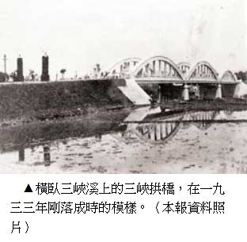

三峽瞧橋
薛好薰｜中國時報／人間副刊∣2012年8月30日
側著看三座拱形的橋面，彷彿一條商業血脈，昔日三峽人將物產往大台北送，又帶回繁華時興的都會產物回到小鎮，如果我有雙穿越時空的巨眼，該可以瞧見咕嚕咕嚕滾動的經濟小血球在台灣北部通暢的循環不已。
人們往來踩踏在橋面上，接榫處發出空空空的聲音，車流汩汩，橋下溪水緩慢，像歷史靜而無聲，不經意間，多少的人事就這樣流淌。
常常往返三峽拱橋，有時騎車或走路到這頭的黃昏市場採購，有時是到另一頭雲集的商家，走過石橋不過二分鐘，卻彷彿行走在一條時光隧道。近午，對面一位打著傘挽著菜籃的阿婆，稍後方跟著一個學齡前的小女孩，小女孩邊走邊張望橋下，拉拉阿婆的衣角，指著橋下說了什麼，阿婆低頭看看小女孩又看看橋下，嘴裡嘟嚷著什麼，腳卻沒有停歇。我也跟著望向橋下，只看到一個人在三峽溪邊洗滌什物。
應該說，還有人在溪邊洗滌什物！時光彷彿倒退至一九七七年畫家李梅樹的那幅「三峽春曉」與一九八一年「清溪浣衣」的年代。彼時在河邊的洗滌衣物順便交換街坊情報的人物如今料已垂垂老矣，或許，作古多年，而見證人事流轉的三峽拱橋依舊安然矗立，不顯老態。唯一想把它逼老的大概是觀光客，帶著遮陽帽、背著背包或水壺在橋上重步遊走，不能想像一座建於一九三三年已經七十幾歲的老橋還這麼硬朗，它既不搖不晃，也不斑駁，甚至裝上了新潮的燈，玩到夜裡才回去的觀光客會驚訝地發現，橋的輪廓在各色燈光的熠閃之下，倒影映在溪水中，如此夢幻，幽靜，橋上影影綽綽，彷彿趁著夜的掩飾，許多人便從過去的歲月中，悠悠走來。
老拱橋，見證舊時光
其實我不喜歡橋面所裝的燈管，會變換藍色、綠色、紫色的燈管，怎麼瞧都會聯想起俗艷的電子花車，這時，我就把眼光投向橋下溪水，溪流是最奇特的魔術師，它在夜裡所勾勒出的老橋輪廓，竟然化俗艷為情切，許多需要長時才能沉澱出的氛圍，憑著一面水鏡反照就能幽幽浮現。
此時河對岸有人在垂釣，河中想必還有魚吧，因為白鷺鷥也常常駐足，狀似披著白蓑的釣客，勾著頸子沉思，踱步，忽地一啄，嘴上便多一條掙扎的小魚。我常妄想，多少的小鎮歷史就這樣堆陳在河床底，我若探手一撈，是不是也會有冰涼的回憶在我指間滴流下來？
眼前已經乾涸幾乎見底的溪流，聽老一輩的人說曾經水量豐沛，可以行船上溯大溪，直到大溪水流量日少，而石門大圳完工後也將上游溪水引走，因此三峽溪水量銳減，三峽拱橋的完工象徵水運時代的結束，藉由這座拱橋，人們才方便往來三峽鎮熱鬧街市與大台北間。
現在，這個重責大任交給不遠處的三峽橋，拱橋只開放給行人及機車、自行車，饒是如此，拱橋依然熱鬧異常。我想再次好好端詳拱形石橋及西式燈座，撫摩洗石子飾面，審視已經被時光之手搓揉得光滑的細細顆粒，但近身而過的人車卻不斷干擾著我，最好的觀賞距離反而是下了橋走到清水街，側著看三座拱形的橋面，從這岸彎到彼岸，才近百公尺長，彷彿一條商業血脈，昔日三峽人將茶葉、染布、樟腦油、竹筍等等物產往大台北送，又帶回繁華時興的都會產物回到小鎮，如果我有雙穿越時空的巨眼，該可以瞧見咕嚕咕嚕滾動的經濟小血球在台灣北部通暢的循環不已。
長福橋，引領觀光潮
記得二十年前剛到三峽時，所見的清水街是鋪柏油路，種了一排柳樹，春天時柳樹青青映堤，是條適合晨昏散步的小街。樹下常停滿摩托車，鄰近白雞、五寮、三民山區的人多半騎車到此停放再轉乘巴士到台北，後來因應整體觀光規劃，重新鋪路，砍了幾棵樹，還在靠近橋頭地方裝了早期的手壓式汲水泵浦，供遊客洗手、懷古。我總覺得，少了那幾棵柳樹的垂蔭，溪水看起來似乎也不那麼清綠了。
其實看拱橋可以不必這麼費事，直接到一百公尺外寬闊的長福橋便是，只是，隔著距離看不真切，況且在三峽住了幾年，踏上長福橋到對面祖師廟及民權老街的次數寥寥可數。感覺上，長福橋是「樹小牆新」，這無疑是在地人才會有的自輕又自大吧。偶然幾次在假日陪著友人逛，看到那麼多遊客往來，橋面密擠著各式攤位，標榜民俗的、古早的玩意，烤花枝香腸，賣枝仔冰，自己反倒驚詫，彷彿不是自己所認識的一座橋。對長福橋的印象本來就欠佳，攤販散去後的油膩地板和髒亂塗鴉，在一步步接近被譽為「東方藝術殿堂」的祖師廟時，很難鋪陳什麼禮敬的心情。這座橋興建過程有一番風風雨雨，彼時我尚未來到這裡，等我進駐三峽，已經矗立一座旁然大橋直逼祖師廟埕，據說原先是設計成可以通車的橋，我不明白廟埕這般窄小，假日信徒與觀光客胼肩雜遝已顯得狹仄，如何行車？當初李梅樹因獨力難排建橋的眾議而抑鬱以終，如果泉下有知，今日場景想來也會教他依然輾轉難安。
所以，有時在旅遊的部落格看到關於長福橋的介紹：幾座涼亭、幾座石獅子、詩情畫意、情人約會場所……，不免嘴角一撇。然而，有熟識的人來到三峽，不免也領著眾人走過長福橋，一邊舉手指劃，嘴中叨念：橋上涼亭八座、一百三十八隻石獅子……，一邊暗忖自己，果然是在地人的自輕又自大。
在長福橋抬眼望鳶山，除了四五月時，油桐花點染白了山頭之外，恆常是蓊綠的。有一年初夏，幾乎每天傍晚散步上去，幾十分鐘後在微喘中登頂，從鳶山鐘樓俯瞰三峽暮色中的橋，橋上車燈仍點點可辨。回看消失在遠處的大漢溪，及更遠處灰濛濛的台北盆地。等到天色暗才下山，會有趕早約會的螢火蟲散落兩旁草叢，或穿越馬路沒身到另一頭林木中。回到街上，再到拱橋下邊的幾攤飲食店解決晚餐，有時吃牛肉麵、有時快炒幾盤小菜，再來一杯沁涼生啤酒，初夏的熱度彷彿在熱鬧的小吃攤上慢慢加溫。現在橋邊已變成黃昏市場，橋下的飲食攤遷到市場旁的幾條馬路邊，有的店面翻新，有的維持原有的低矮拼裝，零零散散分佈，不若以往集中。因為可選擇的商家多了，我也較少光顧，每次經過總習慣望望櫃檯，老闆以我察覺不出的速度緩慢變老，依稀記得，我剛出校門時，他們中年；如今，他們腰圍變粗變廣，額頭也被烹煮的生活蒸燻皺了。
憶昔時，老街老情味
鎮上李梅樹紀念館剛成立時，為因應可能湧入的人潮開始招募解說義工，我也去上了幾堂課。李梅樹的畫、祖師廟、老街、三峽拱橋……聽課的時候興趣盎然，進一步瞭解此地的人文，尤其好幾堂課由李梅樹的公子李景文親自授課，得知許多畫作的創作背景和祖師廟重建的點滴，收穫頗豐。可是我思考良久，終究沒有繼續參加進階的導覽課程，就這樣半路當了逃兵。我依舊在小鎮遊走，仔細走在老街的紅磚拱廊中，看對面街屋矗立的巴洛克式立面，時常停住腳步從缺了門板的大門看崩落的屋樑和土确屋，穿梭在幾座橋之間，此岸，彼岸，自己所體會的情味，似乎只能裝在口袋裡，閒時邊走邊丟幾顆到嘴裡咀嚼，我自知無法勝任搖著小旗子、用擴音器向來來去去陌生的觀光客解說的工作。
二十多年前來到三峽時，沒有北二高、沒有台北大學、沒有北大特區林立的大樓，老街的存廢問題時不時便在媒體上翻騰，一切都市計劃書還躺在某個檔案櫃抽屜中，或者尚未成形。三峽偏處北縣一隅，原像寧靜生活的老人，被注射一劑回春針，重新進入青春期的少年，身體陡地發生變化，北二高在頭頂上犁出一道叛逆又清白的頭皮，台北大學隨之在臉上畫出疆界，建築物如荷爾蒙分泌旺盛的青春疙瘩不斷冒長，老街重新整裝，打扮出改良式的古裝造型供人懷舊，一到假日每一座橋壅塞著雜遝往來的遊客，來看藍染節、來吃金牛角。三峽彷彿變得貪食，狂嚥四方湧入的人，舔舐他們身上的一些糖分鹽分，傍晚時分又忙不迭吐回。
旁觀這樣的吞吐，我心中其實有很多疑惑。